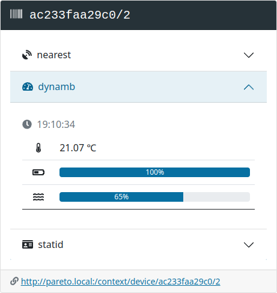

Configure a Minew S1 Sensor
Our step-by-step guide to configure the temperature & humidity sensor with the BeaconSET+ app.

The TL;DR (Too Long; Didn't Read)
Learn how we at reelyActive configure the S1 for real-time sensing and location
- What will this accomplish?
- The S1 will transmit temperature and humidity data periodically to any Bluetooth Low Energy receivers in range.
- How to capture the data?
- The BeaconSET+ mobile app, which is used for configuration, can display the data. Our Pareto Anywhere open source IoT middleware processes the data for any application.
- How long does this take?
- A S1 can be configured in a few minutes when all prerequisites are in place.
Prerequisites
A Minew S1 sensor beacon and the BeaconSET+ mobile app.
Detect and connect Step 1 of 3
Identify and connect to the S1 in the BeaconSET+ mobile app.
- Why BeaconSET+?
- BeaconSET+ is the vendor-maintained app that facilitates the configuration of all S1 features.
- What's the range?
- Configuration is most reliable when the S1 and mobile device are next to one another, but a range of 10m+ is possible.
Physically prepare and identify the S1 Part 1
The S1 must be powered on in order to be detected by the BeaconSET+ mobile app.
Check that the S1 is powered on by observing a periodic blue LED blink through the top of the enclosure. If no blink is observed, power on the S1 by holding down the power button until the blue LED is observed.
If the S1 cannot be powered on, first change the batteries.
Note the 48-bit (16 character) identifier on the enclosure (ex: AC233FA12345).
This uniquely identifies the S1 in the BeaconSET+ mobile app (and in Pareto Anywhere too).
Identify and connect in BeaconSET+ Part 2
The BeaconSET+ mobile app requires Bluetooth and Location to be enabled on the mobile device.
- open the BeaconSET+ app on the mobile device
- identify the S1 in the app by its unique identifier
- select the identified device in the app to initiate a connection
- when prompted, enter the password (default: minew123)
Too many devices detected? Select Edit Filter in the app and reduce the RSSI threshold to display only devices in close proximity.
Configure the transmission SLOTs Step 2 of 3
Configure the S1 to periodically transmit temperature and humidity readings.
- What are SLOTs?
- A SLOT is a transmission window. The beacon supports 6 SLOTs for different packet transmissions and triggers.
- Why change the presets?
- The factory preset SLOTs are mostly irrelevant and unnecessary for common applications.
Determine what to transmit Part 1
The Minew S1 can transmit any of the following packets periodically, or spontaneously given any of the following triggers:
Packets
- Eddystone-UID
- Eddystone-URL
- Telemetry
- iBeacon
- Humidity & Temperature
- Device Info
Triggers
- Temperature above
- Temperature below
- Humidity above
- Humidity below
- Button double tap
- Button triple tap
Countless combinations are possible. In Part 2 next, we'll provide the configuration details for one specific combination with the following behaviour:
| Trigger | Packet | Details |
|---|---|---|
| Temperature above | Eddystone-UID | 🥵 emoji using InteroperaBLE Identifier (Unicode Code Point) |
| Temperature below | Eddystone-UID | 🥶 emoji using InteroperaBLE Identifier (Unicode Code Point) |
| — | Humidity & Temperature | Periodic temperature and humidity readings |
| — | Device Info | Periodic identification, battery & reconfigurability |
Configure each SLOT Part 2
From the BeaconSET+ app, individually configure each of the six SLOTs as follows:
Empty
Set the Frame Type to Empty and Save to maximise battery life.
UID
| Frame Type | UID |
|---|---|
| Adv Content | |
| Namespace ID | 496f49445554462d3332 |
| Instance ID | 00000001f975 (🥵) |
| Base params | Ignored (see Trigger) |
| Trigger | |
| Enable | Yes |
| Type | Temperature above |
| Temperature >= | 23°C |
| Always advertise | No |
| Adv interval | 4000ms |
| Tx Power | 0dBm |
UID
| Frame Type | UID |
|---|---|
| Adv Content | |
| Namespace ID | 496f49445554462d3332 |
| Instance ID | 00000001f976 (🥶) |
| Base params | Ignored (see Trigger) |
| Trigger | |
| Enable | Yes |
| Type | Temperature below |
| Temperature <= | 19°C |
| Always advertise | No |
| Adv interval | 4000ms |
| Tx Power | 0dBm |
Empty
Set the Frame Type to Empty and Save to maximise battery life.
INFO
Do not modify this SLOT: the BeaconSet+ app requires the INFO packet to connect!
HT
| Frame Type | HT |
|---|---|
| Base params | |
| Adv interval | 4000ms |
| RSSI @ 0m | -24dBm |
| Radio TxPower | 0dBm |
| Trigger | Disabled (Base params apply) |
| Enable | No |
| Type | None |
| Always advertise | No |
| Adv interval | 4000ms |
| Tx Power | 0dBm |
Observe data in Pareto Anywhere Step 3 of 3
Optionally observe the transmitted data in your web browser.
- What's Pareto Anywhere?
- Pareto Anywhere is open source IoT middleware that makes sense of who/what is where/how, in any physical space, in real time.
- Can other software be used?
- Yes. Any software that can receive and interpret Bluetooth Low Energy packets can be used.
Install Pareto Anywhere (OPTIONAL) Part 1
Follow one of our tutorials to install Pareto Anywhere on your platform of choice:
-

-
Run Pareto Anywhere on a PC
Install and run Pareto Anywhere on a personal computer to make any physical space context-aware.
-

-
Run Pareto Anywhere on a Raspberry Pi
Install and run Pareto Anywhere on a Pi to make any physical space context-aware.
Observe the /context API (OPTIONAL) Part 2
Browse to the /context API of the Pareto Anywhere instance, specifying the S1's identifier in the route as follows:
http://pareto.local/context/device/ac233fa12345/2
Change pareto.local to the IP address and port (ex: 127.0.0.1:3001) as required, and the identifier of the device (ex: ac233fa000000) to that of your S1.* The /2 at the end specifies that the identifier is an EUI-48.
*alternatively, browse to …/context and select your S1 from the list of detected devices.
Enjoy the data (OPTIONAL) Part 3
Our cheatsheet details the raddec and dynamb JSON output from the Pareto Anywhere open source middleware.
-

-
Developers Cheatsheet
"Owl" you need to know about Pareto Anywhere's core data structures.
Retrieve history in BeaconSet+ (OPTIONAL) Part 4
The previous 24 hours of temperature and humidity data can also be retrieved and displayed in the BeaconSet+ app, when connected. Connect to the S1 as in Step 1 Part 2, then select the Sensor field in the General tab, and finally select SYN DATA to retrieve and display the historical readings.


Tutorial prepared with ♥ by jeffyactive.
You can reelyActive's open source efforts directly by contributing code & docs, collectively by sharing across your network, and commercially through our packages.Where to next?
Continue exploring our open architecture and all its applications.
-

-
Directory of Devices
Browse all device configuration tutorials and development guides.
-

-
reelyActive Developers
Browse all developer documentation and tutorials.
-

-
Minew Devices & Pareto Anywhere
Realise interoperable IoT solutions with open source middleware.
-

-
reelyActive
Together, let's put things in context.